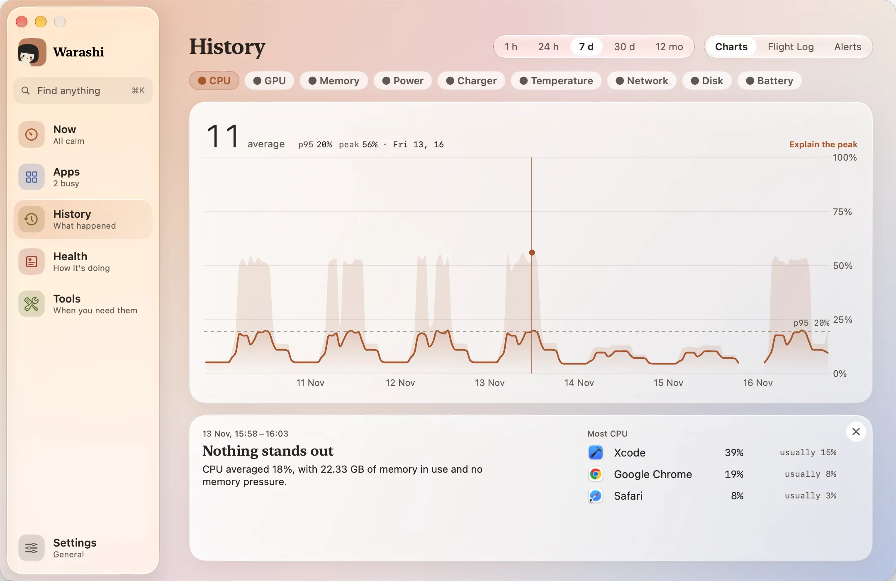
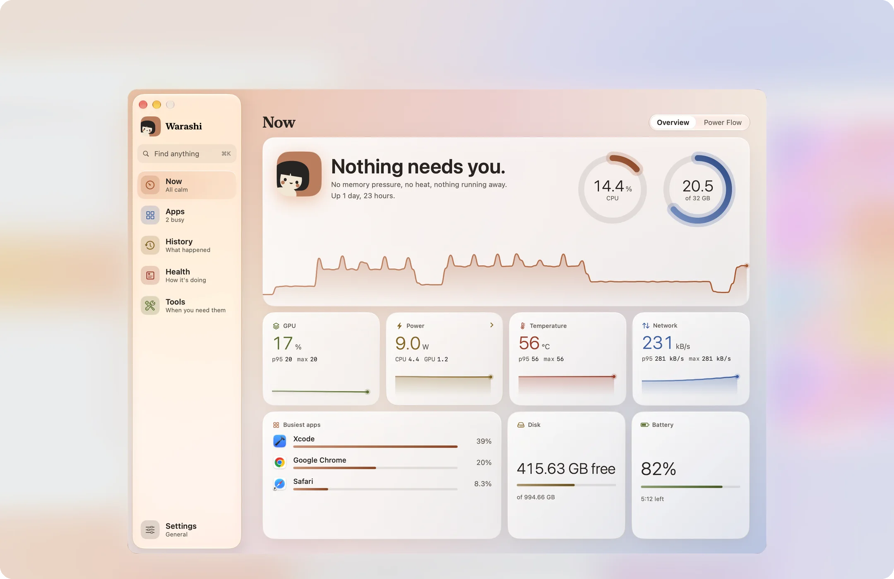

L’esprit qui veille sur votre Mac.
Warashi surveille votre Mac, garde sa batterie jeune et son disque dégagé, vous prévient dès que quelque chose cloche, et vous rappelle de vous reposer. Une seule app discrète dans la barre des menus au lieu de six.
Apple silicon · macOS 26 ou version ultérieure · Bêta gratuite · Aucun compte


Soigner · Batterie
Maintenue à 80 %.
Vieillit des années plus lentement qu’une batterie qui reste à 100 %.
Nettoyer
7,2 Go sans risque
Caches des appsNavigateursJournauxDéveloppeur
Se reposer · Pauses
0:15
Regardez loin de l’écran.
Bilan
Tout va bien.
Connaître · Alertes
 Google Chrome9,8 Go
Google Chrome9,8 Go
La mémoire manque. Quittez l’app, ou laissez faire.
Connaître · Historique
Pourquoi était-il lent à 14:02 ?
Xcode utilisait presque tout le processeur.
Pour les développeurs
$ warashi agents Claude Code working · 62% left Codex done · my-app
Connaître
Il connaît votre Mac par cœur.
Un esprit et un chiffre dans la barre des menus, deux près de l’encoche, et une mesure toutes les cinq secondes, gardée un an. Quand quelque chose arrive, Warashi sait déjà pourquoi.



Dit une seule fois
Une app qui s’emballe, la mémoire qui manque, la chaleur, un disque qui se remplit.
Une fois par problème, avec les preuves et une chose à faire.
Journal de bord · hier
- La musique a gardé votre Mac éveillé pendant 55 min
- Votre Mac a été lent pendant 6 min Xcode utilisait presque tout le processeur.
- La mémoire de Google Chrome augmente vite +1,35 Go depuis une heure.
- Chargé à 100 %, au-delà de votre limite de 80 %


Soigner
Il garde votre Mac jeune.
Une batterie maintenue à 80 % dure des années de plus. Un Bilan chaque semaine repère les ennuis avant qu’ils ne coûtent cher. Et quand vient l’heure d’un nouveau Mac, Warashi sait exactement ce qu’il vous faut.


$249
ce que coûte chez Apple la batterie d’un MacBook Pro usé, hors garantie. Une batterie qui reste à 100 % et au chaud s’use le plus vite.


Conseiller d’achat
Mon prochain Mac a-t-il besoin de 32 Go ?
Après 30 jours de votre usage réel, Warashi vous dit de combien de mémoire et de stockage votre prochain Mac a besoin, et si une puce plus rapide servirait. Avec les preuves, pas au hasard devant la caisse.
Nettoyer
Il garde votre disque dégagé.
Voyez ce qui remplit le disque, effacez d’un coup ce qui revient de lui-même, et supprimez les apps avec tout ce qu’elles ont laissé. Tout part dans la corbeille : rien ne se perd par erreur.
Nettoyer
Tout ce qui pourrait partir, selon le soin à y mettre.
- Sans risqueCaches des apps et des navigateurs, journaux, données de compilation de Xcode. Ils reviennent d’eux-mêmes.7,2 Go
- À vérifier d’abordAnciens installeurs, doubles de téléchargements, copies des pièces jointes de Mail.1,4 Go
- À manier avec soinLes sauvegardes d’iPhone et d’iPad, qui sont peut-être la seule copie.38 Go


Désinstalleur
Supprimez les apps pour de bon.
Chaque app avec ce qu’elle a laissé dans votre Bibliothèque, celles que vous n’avez pas ouvertes depuis des mois en premier. Plus les restes d’apps supprimées il y a des années.
Jamais vos fichiers
Seulement les noms, les tailles et les dates.
Warashi n’ouvre jamais un document. L’Accès complet au disque est facultatif.
Corbeille
Vidée. 4,8 Go récupérés.
Un petit signe quand la corbeille grossit, et le vrai chiffre quand vous la videz.
Se reposer
Et il veille sur vous.
Des pauses douces pour vos yeux et votre dos, un écran plus calme quand il faut se concentrer, et un Mac qui reste éveillé exactement le temps qu’il faut.


Rester éveillé
Pour une heure, jusqu’à la fin du travail, ou capot fermé.
Pour un téléchargement, une compilation ou une présentation.
Les petits détails
- Débit Internet et disque
- Qualité du Wi‑Fi
- Un écran noir pour nettoyer
- Masquer les icônes du bureau
- Couper le micro
- Tout éjecter


Pour les développeurs
Qu’y a-t-il sur ce port ? Combien coûte cet agent ?
Claude Code, Codex et Cursor : ce que fait chacun, ce qu’il reste de votre limite, et un petit signe dans l’encoche quand l’un a besoin de vous. Serveurs de dev par projet, Docker, modèles d’IA locaux en mémoire, et les gigaoctets que vos outils laissent derrière eux.


La commande warashi
$ warashi explain 14:30 Memory ran short Swap rose from 1.2 GB to 8.6 GB. $ warashi apps --hours 3 Xcode CPU 37m 35s 9.4 GB Safari CPU 26m 22s 6.1 GB
Et, en option, une connexion MCP en lecture seule, pour que Claude, Cursor et d’autres apps d’IA répondent à partir de l’historique de votre Mac. Rien n’est partagé sans que vous l’ajoutiez.
Une seule app discrète, là où il en fallait tout un tiroir.
Warashi a pris ce que chacun de ces outils fait de mieux et l’a réuni en un seul endroit, qui en plus se souvient. Rien contre eux : ils sont bons dans leur domaine.
| Ce que vous obtenez | Warashi | CleanMyMac | iStat Menus 7 | AlDente Pro | Amphetamine | coconutBattery |
|---|---|---|---|---|---|---|
| Des mesures en direct dans la barre des menus | ✓ | ~un menu | ✓ | – | – | – |
| Un an d’historique, et chaque instant expliqué | ✓ | – | ~historique, sans explications | – | – | – |
| Limite de charge, charge complète, planification | ✓ | – | – | ✓ | – | – |
| L’état de la batterie au fil des mois | ✓ | – | – | ~ | – | ✓ |
| Rester éveillé, même écran rabattu | ✓ | – | – | – | ✓ | – |
| Désinstalleur, restes, gros fichiers, Téléchargements | ✓ | ✓ | – | – | – | – |
| Bilan sécurité et sauvegarde | ✓ | ~analyse des logiciels malveillants | – | – | – | – |
| Pauses et rappels de posture | ✓ | – | – | – | – | – |
| Flux d’énergie et ce que coûte chaque app | ✓ | – | ~mesures | – | – | – |
| Prix | Bêta gratuiteachat unique à la 1.0 | $39.95par an | $11.99une fois | €11.49par an, ou €23.99 une fois | Gratuit | €9.95une fois, pour Plus |
≈ $75par an, la première année
Ce que les cinq coûtent ensemble, pour un Mac. Et cinq éléments dans la barre des menus, cinq programmes de mise à jour, cinq jeux de réglages.
$0pendant la bêta de Warashi
Warashi 1.0 sera un achat unique. Aucun abonnement, jamais. Votre historique et vos réglages sont conservés.
Prix relevés sur le site de chaque éditeur en novembre 2026, pour un Mac ; ils varient selon la région et les promotions. Fonctions telles que listées par chaque app ; « ~ » signifie en partie.
0.2%
d’un cœur en arrière-plan. Rien du tout pendant que vos écrans sont en veille.
60Mo
de mémoire, en général, fenêtre fermée. Natif en Swift, conçu pour Apple silicon.
0 compte
Téléchargez, ouvrez, c’est tout. Votre historique ne quitte jamais votre Mac.
Privé par conception
- Aucun compte, aucun cloud, aucune télémétrie sur vos apps ou vos fichiers.
- Aucun enregistrement de l’écran, aucune frappe au clavier, aucun contenu de fichier, jamais.
- Des statistiques d’utilisation anonymes seulement, présentées dans la visite de bienvenue. Ce qui est envoyé, exactement
Découvrez-le en deux minutes.
De bonnes questions.
Qu’est-ce qu’un warashi ?
Dans le folklore japonais, un zashiki-warashi est un petit esprit de la maison. On dit que le foyer où il vit prospère. Le nôtre vit dans votre barre des menus et veille sur votre Mac.
Sur quels Mac fonctionne-t-il ?
Les Mac avec Apple silicon (M1 et ultérieurs) sous macOS 26 ou version ultérieure.
Est-ce gratuit ?
Gratuit pendant la bêta. Warashi 1.0 sera un achat unique, sans abonnement. Votre historique et vos réglages suivent.
Puis-je garder AlDente ou CleanMyMac ?
Vous le pouvez, mais deux gestionnaires de charge se disputeront la limite : n’en gardez qu’un. Warashi vous prévient quand il en voit un autre tourner.
Ralentit-il mon Mac ?
Non. Environ 0,2 % d’un cœur en arrière-plan et 60 Mo de mémoire, mesurés et affichés dans Réglages.
En quoi est-il différent de Moniteur d’activité ?
Le Moniteur d’activité montre cette seconde. Warashi se souvient de ce qui s’est passé pendant que vous ne regardiez pas, vous prévient quand cela compte, et veille sur la batterie, le disque et vous.
Fait par une seule personne, avec soin.
Bonjour, je suis Adam, développeur indépendant. Warashi est mon propre projet : l’app, son design et ce site. Je veux en faire le genre d’app Mac que j’aimerais utiliser moi-même : calme, honnête sur ses chiffres, et légère pour votre Mac. Si vous avez une idée, ou si quelque chose ne va pas, écrivez-moi.
Adam
Laissez un esprit discret
veiller sur votre Mac.
Gratuit tant que Warashi est en bêta. Un petit téléchargement, aucun compte, et dès ce soir votre Mac a quelqu’un qui veille sur lui.